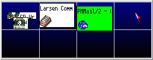

&pgr; „r fr†n b”rjan avaktiverad. F”r att k”ra den, g† till sidan "Funktioner" hos "&xwp; Setup" objektet och bocka f”r respektive box. Detta kr„ver att „ven &xwp; PM hook installeras.
&pgr; „r en virtuell skrivbordsutility f”r &os2;. V„sentligen, g”r den att anv„ndaren kan arbeta p† flera skrivbord samtidigt. Din sk„rm betraktas som en av flera, och du kan v„xla mellan dom. Detta m†ngfaldigar din arbetsyta eftersom f”nster kan ligga utanf”r det f”r n„rvarande synliga skrivbordet och fortfarande enkelt kan n†s genom att v„xla till ett annat skrivbord.

Traditionellt, visar de flesta virtuella skrivbordsprogram en representation av det totala skrivbordet i ett f”nster, belysade det aktuella skrivbordet. Standardmekanismen f”r att v„xla mellan skrivbord har varit att klicka (med en mus) p† ett av de andra skrivborden, vilket skall ta bort det aktuella skrivbordets f”nster och visa det nya skrivbordets f”nster.
&pgr; kan konfigureras i
"Sk„rm" inst„llningsobjektet, d„r &xwp; infogar flera sidor.